Learning Module 10 Simple Linear Regression - Part 3: Hypothesis Tests in the Simple Linear Regression Model
Volume 1: Quantitative Methods
Learning Module 10 Simple Linear Regression
Part 3/6: Hypothesis Tests in the Simple Linear Regression Model (PDF Pages 290–302)
Tập 1: Các Phương pháp Định lượng (Quantitative Methods)
Học phần 10: Hồi quy Tuyến tính Đơn (Simple Linear Regression)
Phần 3/6: Kiểm định Giả thuyết trong Mô hình Hồi quy Tuyến tính Đơn (Trang PDF 290–302)
- Based on Exhibit 17 and Exhibit 18, describe which assumption(s) of simple linear regression the analyst’s model may be violating. Solution:
- Dựa trên Hình 17 và Hình 18, hãy mô tả (các) giả định nào của hồi quy tuyến tính đơn mà mô hình của nhà phân tích có thể đang vi phạm.
The correct model is not linear, as evident from the pattern of the revenues in Exhibit 17. In the earlier years (i.e., 1 and 2) and later years (i.e., 14 and 15), the linear model underestimates revenues, whereas for the middle years (i.e., 7–11), the linear model overestimates revenues. Moreover, the curved pattern of residuals in Exhibit 18 indicates potential heteroskedasticity (residuals have unequal variances), lack of independence of observations, and non-normality (a concern given the small sample size of n = 15). In sum, the analyst should be concerned that her model violates all the assumptions governing simple linear regression (linearity, homoskedasticity, independence, and normality).
Lời giải:
4
Mô hình đúng không phải là tuyến tính, như thấy rõ từ quy luật của doanh thu trong Hình 17. Trong những năm đầu (tức là năm 1 và 2) và những năm cuối (tức là năm 14 và 15), mô hình tuyến tính ước lượng thấp hơn thực tế (underestimates) doanh thu, trong khi đối với những năm ở giữa (tức là năm 7–11), mô hình tuyến tính lại ước lượng cao hơn thực tế (overestimates) doanh thu. Hơn nữa, quy luật cong của phần dư trong Hình 18 cho thấy khả năng có phương sai sai số thay đổi (heteroskedasticity – phần dư có phương sai không bằng nhau), thiếu tính độc lập giữa các quan sát (lack of independence), và không tuân theo phân phối chuẩn (non-normality – một mối quan ngại do cỡ mẫu nhỏ $n = 15$). Tóm lại, nhà phân tích cần lo ngại rằng mô hình của cô ấy vi phạm tất cả các giả định chi phối hồi quy tuyến tính đơn (tính tuyến tính, phương sai sai số không đổi, tính độc lập và tính phân phối chuẩn).
HYPOTHESIS TESTS IN THE SIMPLE LINEAR REGRESSION MODEL
4
calculate and interpret measures of fit and formulate and evaluate tests of fit and of regression coefficients in a simple linear regression
KIỂM ĐỊNH GIẢ THUYẾT TRONG MÔ HÌNH HỒI QUY TUYẾN TÍNH ĐƠN (HYPOTHESIS TESTS IN THE SIMPLE LINEAR REGRESSION MODEL)
- tính toán và diễn giải các thước đo mức độ phù hợp (measures of fit) cũng như thiết lập và đánh giá các kiểm định mức độ phù hợp (tests of fit) và kiểm định các hệ số hồi quy trong hồi quy tuyến tính đơn
Analysis of Variance
Phân tích Phương sai (Analysis of Variance)
The simple linear regression model sometimes describes the relationship between two variables quite well, but sometimes it does not. We must be able to distinguish between these two cases to use regression analysis effectively. Remember our goal is to explain the variation of the dependent variable. So, how well has this goal been achieved, given our choice of independent variable?
Mô hình hồi quy tuyến tính đơn đôi khi mô tả mối quan hệ giữa hai biến số khá tốt, nhưng đôi khi lại không. Chúng ta phải có khả năng phân biệt giữa hai trường hợp này để sử dụng phân tích hồi quy một cách hiệu quả. Hãy nhớ rằng mục tiêu của chúng ta là giải thích sự biến thiên của biến phụ thuộc. Vậy mục tiêu này đã đạt được tốt đến mức nào, với lựa chọn biến độc lập của chúng ta?
Breaking Down the Sum of Squares Total into Its Components
_Phân rã Tổng Bình phương Toàn phần thành các Thành phần của Nó (Breaking Down the Sum of Squares Total into Its Components)_
We begin with the sum of squares total and then break it down into two parts: the sum of squares error and the sum of squares regression (SSR) . The sum of squares regression is the sum of the squared differences between the predicted value of the dependent variable, Yˆ i , based on the estimated regression line, and the mean of the dependent variable, Y_ :
Chúng ta bắt đầu với tổng bình phương toàn phần (sum of squares total – SST) và sau đó chia nó thành hai phần: tổng bình phương sai số (sum of squares error – SSE) và tổng bình phương hồi quy (sum of squares regression – SSR). Tổng bình phương hồi quy là tổng bình phương các chênh lệch giữa giá trị dự báo của biến phụ thuộc, $\hat{Y}_i$, dựa trên đường hồi quy ước lượng, và giá trị trung bình của biến phụ thuộc, $\bar{Y}$:
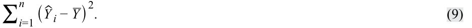
We have already defined the sum of squares total, which is the total variation in Y , and the sum of squares error, the unexplained variation in Y . Note that the sum of squares regression is the explained variation in Y . So, as illustrated in Exhibit 19, SST = SSR + SSE, meaning total variation in Y equals explained variation in Y plus unexplained variation in Y .
Chúng ta đã định nghĩa tổng bình phương toàn phần (SST), là tổng biến thiên trong $Y$, và tổng bình phương sai số (SSE), là phần biến thiên không được giải thích (unexplained variation) trong $Y$. Lưu ý rằng tổng bình phương hồi quy (SSR) là phần biến thiên được giải thích (explained variation) trong $Y$. Do đó, như được minh họa trong Hình 19, $\text{SST} = \text{SSR} + \text{SSE}$, nghĩa là tổng biến thiên trong $Y$ bằng phần biến thiên được giải thích trong $Y$ cộng với phần biến thiên không được giải thích trong $Y$.
Exhibit 19: Breakdown of Variation of Dependent Variable
Hình 19: Phân rã Sự biến thiên của Biến phụ thuộc (Breakdown of Variation of Dependent Variable)
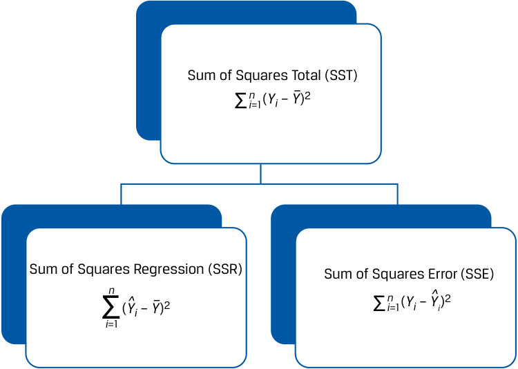
Chú thích hình ảnh: Tổng bình phương toàn phần ($\text{SST} = \sum_{i=1}^n (Y_i - \bar{Y})^2$) được chia thành hai nhánh: Tổng bình phương hồi quy ($\text{SSR} = \sum_{i=1}^n (\hat{Y}_i - \bar{Y})^2$) và Tổng bình phương sai số ($\text{SSE} = \sum_{i=1}^n (Y_i - \hat{Y}_i)^2$).
We show the breakdown of the sum of squares total formula for our ROA regression example in Exhibit 20. The total variation of ROA that we want to explain (SST) is 239.50. This number includes the variation unexplained (SSE), 47.88, and the variation explained (SSR), 191.63. These sum of squares values are important inputs into measures of the fit of the regression line.
Chúng ta trình bày sự phân rã công thức tổng bình phương toàn phần cho ví dụ hồi quy ROA của chúng ta trong Bảng 20. Tổng biến thiên của ROA mà chúng ta muốn giải thích (SST) là 239,50. Con số này bao gồm phần biến thiên không được giải thích (SSE) là 47,88, và phần biến thiên được giải thích (SSR) là 191,63. Các giá trị tổng bình phương này là các dữ liệu đầu vào quan trọng cho các thước đo mức độ phù hợp của đường hồi quy.
Exhibit 20: Breakdown of the Sum of Squares Total for ROA Model
Bảng 20: Phân rã Tổng Bình phương Toàn phần cho Mô hình ROA
| Company | ROA (Yi) |
CAPEX (Xi) |
Predicted ROA ( ˆ Y) |
Variation to Be Explained ( Y i− _ Y) 2 |
Variation Unexplained ( Y i−ˆ Yi ) 2 |
Variation Explained ( ˆ Yi− _ Y) 2 |
|---|---|---|---|---|---|---|
| A | 6.0 | 0.7 | 5.750 | 42.25 | 0.063 | 45.563 |
| B | 4.0 | 0.4 | 5.375 | 72.25 | 1.891 | 50.766 |
| C | 15.0 | 5.0 | 11.125 | 6.25 | 15.016 | 1.891 |
| D | 20.0 | 10.0 | 17.375 | 56.25 | 6.891 | 23.766 |
| E | 10.0 | 8.0 | 14.875 | 6.25 | 23.766 | 5.641 |
| F | 20.0 | 12.5 | 20.500 | 56.25 | 0.250 | 64.000 |
| 239.50 | 47.88 | 191.625 | ||||
| Mean | 12.50 |
| Công ty (Company) | ROA ($Y_i$) | CAPEX ($X_i$) | ROA dự báo ($\hat{Y}_i$) | Biến thiên cần giải thích $(Y_i - \bar{Y})^2$ | Biến thiên không được giải thích $(Y_i - \hat{Y}_i)^2$ | Biến thiên được giải thích $(\hat{Y}_i - \bar{Y})^2$ |
|---|---|---|---|---|---|---|
| A | 6.0 | 0.7 | 5.750 | 42.25 | 0.063 | 45.563 |
| B | 4.0 | 0.4 | 5.375 | 72.25 | 1.891 | 50.766 |
| C | 15.0 | 5.0 | 11.125 | 6.25 | 15.016 | 1.891 |
| D | 20.0 | 10.0 | 17.375 | 56.25 | 6.891 | 23.766 |
| E | 10.0 | 8.0 | 14.875 | 6.25 | 23.766 | 5.641 |
| F | 20.0 | 12.5 | 20.500 | 56.25 | 0.250 | 64.000 |
| 239.50 | 47.88 | 191.625 | ||||
| Trung bình (Mean) | 12.50 |
Sum of squares total = 239.50. Sum of squares error = 47.88. Sum of squares regression = 191.63.
Tổng bình phương toàn phần (SST) = 239.50. Tổng bình phương sai số (SSE) = 47.88. Tổng bình phương hồi quy (SSR) = 191.63.
Measures of Goodness of Fit
Các Thước đo Mức độ Phù hợp (Measures of Goodness of Fit)
We can use several measures to evaluate goodness of fit—that is, how well the regression model fits the data. These include the coefficient of determination, the F -statistic for the test of fit, and the standard error of the regression.
Chúng ta có thể sử dụng một số thước đo để đánh giá mức độ phù hợp (goodness of fit)—tức là mô hình hồi quy khớp với dữ liệu tốt đến mức nào. Những thước đo này bao gồm hệ số xác định (coefficient of determination), thống kê $F$ ($F$-statistic) cho kiểm định mức độ phù hợp, và sai số chuẩn của hồi quy (standard error of the regression).
The coefficient of determination (R2 ) , also referred to as the R -squared or R2 , is the percentage of the variation of the dependent variable that is explained by the independent variable:
Hệ số xác định (coefficient of determination – $R^2$), còn được gọi là $R$-bình phương ($R$-squared), là tỷ lệ phần trăm sự biến thiên của biến phụ thuộc được giải thích bởi biến độc lập:
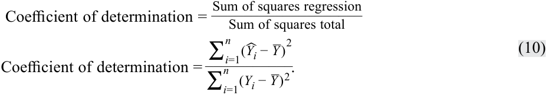
By construction, the coefficient of determination ranges from 0 percent to 100 percent. In our ROA example, the coefficient of determination is 191.625 ÷ 239.50, or 0.8001, so 80.01 percent of the variation in ROA is explained by CAPEX. In a simple linear regression, the square of the pairwise correlation is equal to the coefficient of determination:
Theo cách xây dựng, hệ số xác định nằm trong khoảng từ 0% đến 100%. Trong ví dụ ROA của chúng ta, hệ số xác định là $191.625 \div 239.50$, hay $0.8001$, nghĩa là 80,01% sự biến thiên trong ROA được giải thích bởi CAPEX. Trong hồi quy tuyến tính đơn, bình phương của hệ số tương quan cặp bằng với hệ số xác định:
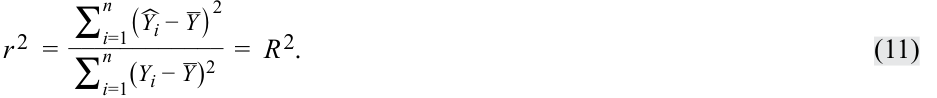
In our earlier ROA regression analysis, r = 0.8945, so we now see that r2 is indeed equal to the coefficient of determination ( R2 ), since (0.8945)2 = 0.8001.
Trong phân tích hồi quy ROA trước đó của chúng ta, $r = 0.8945$, vì vậy bây giờ chúng ta thấy rằng $r^2$ thực sự bằng hệ số xác định ($R^2$), vì $(0.8945)^2 = 0.8001$.
Whereas the coefficient of determination—the portion of the variation of the dependent variable explained by the independent variable—is descriptive, it is not a statistical test. To see if our regression model is likely to be statistically meaningful, we will need to construct an F -distributed test statistic.
Mặc dù hệ số xác định—phần biến thiên của biến phụ thuộc được giải thích bởi biến độc lập—mang tính mô tả, nhưng nó không phải là một kiểm định thống kê. Để xem liệu mô hình hồi quy của chúng ta có khả năng mang ý nghĩa thống kê hay không, chúng ta sẽ cần xây dựng một thống kê kiểm định có phân phối $F$ ($F$-distributed test statistic).
In general, we use an F -distributed test statistic to compare two variances. In regression analysis, we can use an F -distributed test statistic to test whether the slopes in a regression are equal to zero, with the slopes designated as bi, against the alternative hypothesis that at least one slope is not equal to zero:
Nhìn chung, chúng ta sử dụng một thống kê kiểm định có phân phối $F$ để so sánh hai phương sai. Trong phân tích hồi quy, chúng ta có thể sử dụng thống kê kiểm định có phân phối $F$ để kiểm định xem liệu các hệ số góc trong một hồi quy có bằng 0 hay không, với các hệ số góc được ký hiệu là $b_i$, đối lập với giả thuyết đối rằng có ít nhất một hệ số góc khác 0:
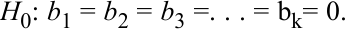
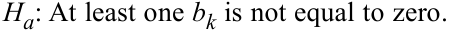
For simple linear regression, these hypotheses simplify to
Đối với hồi quy tuyến tính đơn, các giả thuyết này được đơn giản hóa thành:
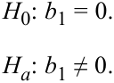
The F -distributed test statistic is constructed by using the sum of squares regression and the sum of squares error, each adjusted for degrees of freedom; in other words, it is the ratio of two variances. We divide the sum of squares regression by the number of independent variables, represented by k. In the case of a simple linear regression, k = 1, so we arrive at the mean square regression (MSR) , which is the same as the sum of squares regression:
Thống kê kiểm định có phân phối $F$ được xây dựng bằng cách sử dụng tổng bình phương hồi quy (SSR) và tổng bình phương sai số (SSE), mỗi đại lượng được điều chỉnh theo bậc tự do (degrees of freedom); nói cách khác, nó là tỷ số của hai phương sai. Chúng ta chia tổng bình phương hồi quy cho số lượng biến độc lập, được ký hiệu là $k$. Trong trường hợp hồi quy tuyến tính đơn, $k = 1$, vì vậy chúng ta thu được trung bình bình phương hồi quy (mean square regression – MSR), có giá trị bằng chính tổng bình phương hồi quy:
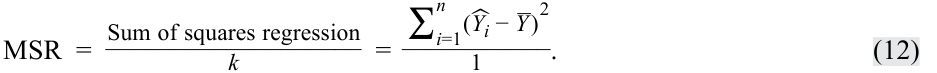
So, for simple linear regression,
Vì vậy, đối với hồi quy tuyến tính đơn:
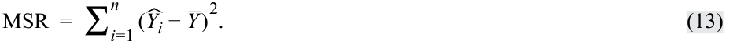
Next, we calculate the mean square error (MSE) , which is the sum of squares error divided by the degrees of freedom, which are n − k − 1. In simple linear regression, n − k − 1 becomes n − 2:
Tiếp theo, chúng ta tính trung bình bình phương sai số (mean square error – MSE), bằng tổng bình phương sai số chia cho bậc tự do là $n - k - 1$. Trong hồi quy tuyến tính đơn, $n - k - 1$ trở thành $n - 2$:
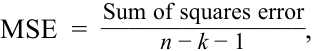
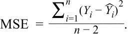
Therefore, the F -distributed test statistic (MSR/MSE) is
Do đó, thống kê kiểm định có phân phối $F$ ($\text{MSR}/\text{MSE}$) là:
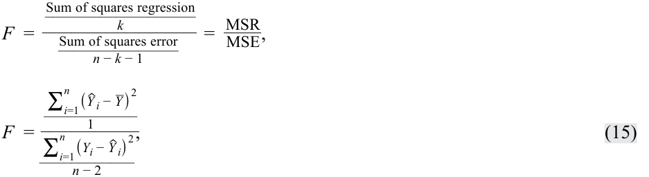
which is distributed with 1 and n − 2 degrees of freedom in simple linear regression. The F -statistic in regression analysis is one sided, with the rejection region on the right side, because we are interested in whether the variation in Y explained (the numerator) is larger than the variation in Y unexplained (the denominator).
phân phối theo 1 và $n - 2$ bậc tự do trong hồi quy tuyến tính đơn. Thống kê $F$ trong phân tích hồi quy là kiểm định một phía (one sided), với miền bác bỏ (rejection region) nằm ở phía bên phải, bởi vì chúng ta quan tâm đến việc liệu phần biến thiên trong $Y$ được giải thích (tử số) có lớn hơn phần biến thiên trong $Y$ không được giải thích (mẫu số) hay không.
Hypothesis Testing of Individual Regression Coefficients
Kiểm định Giả thuyết cho Từng Hệ số Hồi quy Riêng lẻ (Hypothesis Testing of Individual Regression Coefficients)
Hypothesis Tests of the Slope Coefficient
_Kiểm định Giả thuyết đối với Hệ số góc (Hypothesis Tests of the Slope Coefficient)_
We can use the F -statistic to test for the significance of the slope coefficient (i.e., whether it is significantly different from zero), but we also may want to perform other hypothesis tests for the slope coefficient—for example, testing whether the population slope is different from a specific value or whether the slope is positive. We can use a t -distributed test statistic to test such hypotheses about a regression coefficient.
Chúng ta có thể sử dụng thống kê $F$ để kiểm định ý nghĩa thống kê của hệ số góc (tức là liệu nó có khác 0 một cách có ý nghĩa thống kê hay không), nhưng chúng ta cũng có thể muốn thực hiện các kiểm định giả thuyết khác cho hệ số góc—ví dụ: kiểm định xem hệ số góc tổng thể có khác một giá trị cụ thể nào đó hay không hoặc liệu hệ số góc có dương hay không. Chúng ta có thể sử dụng thống kê kiểm định có phân phối $t$ ($t$-distributed test statistic) để kiểm định các giả thuyết như vậy về một hệ số hồi quy.
Suppose we want to check a stock’s valuation using the market model; we hypothesize that the stock has an average systematic risk (i.e., risk similar to that of the market), as represented by the coefficient on the market returns variable. Or we may want to test the hypothesis that economists’ forecasts of the inflation rate are unbiased (i.e., on average, not overestimating or underestimating actual inflation rates). In each case, does the evidence support the hypothesis? Such questions as these can be addressed with hypothesis tests on the regression slope. To test a hypothesis about a slope, we calculate the test statistic by subtracting the hypothesized population slope ( B 1) from the estimated slope coefficient ( bˆ 1 ) and then dividing this difference by the standard error of the slope coefficient, sb ˆ1:
Giả sử chúng ta muốn kiểm tra định giá của một cổ phiếu bằng cách sử dụng mô hình thị trường (market model); chúng ta đặt giả thuyết rằng cổ phiếu có rủi ro hệ thống (systematic risk) ở mức trung bình (tức là rủi ro tương tự như rủi ro của thị trường), được đại diện bởi hệ số gắn với biến tỷ suất sinh lợi thị trường. Hoặc chúng ta có thể muốn kiểm định giả thuyết rằng dự báo của các nhà kinh tế học về tỷ lệ lạm phát là không chệch (unbiased – tức là xét trung bình, không ước lượng cao hơn hay thấp hơn tỷ lệ lạm phát thực tế). Trong mỗi trường hợp, bằng chứng có ủng hộ giả thuyết đó không? Những câu hỏi như thế này có thể được giải quyết bằng các kiểm định giả thuyết đối với hệ số góc hồi quy. Để kiểm định một giả thuyết về hệ số góc, chúng ta tính toán thống kê kiểm định bằng cách lấy hệ số góc ước lượng ($\hat{b}_1$) trừ đi hệ số góc tổng thể theo giả thuyết ($B_1$) và sau đó chia hiệu số này cho sai số chuẩn của hệ số góc, $s_{\hat{b}_1}$:
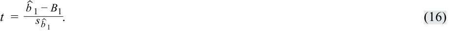
This test statistic is t -distributed with n − k − 1 or n − 2 degrees of freedom because two parameters (an intercept and a slope) were estimated in the regression.
Thống kê kiểm định này có phân phối $t$ với $n - k - 1$ hoặc $n - 2$ bậc tự do bởi vì có hai tham số (một hệ số chặn và một hệ số góc) đã được ước lượng trong hồi quy.
The standard error of the slope coefficient ( sb ˆ1) for a simple linear regression is the ratio of the model’s standard error of the estimate ( se ), introduced later, to the square root of the variation of the independent variable:
Sai số chuẩn của hệ số góc (standard error of the slope coefficient – $s_{\hat{b}_1}$) đối với hồi quy tuyến tính đơn là tỷ số giữa sai số chuẩn của ước lượng của mô hình ($s_e$), sẽ được giới thiệu sau, với căn bậc hai của sự biến thiên của biến độc lập:
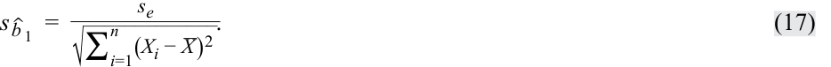
We compare the calculated t -statistic with the critical values to test hypotheses. Note that the greater the variability of the independent variable, the lower the standard error of the slope (Equation 17) and hence the greater the calculated t -statistic (Equation 16). If the calculated t -statistic is outside the bounds of the critical t -values, we reject the null hypothesis, but if the calculated t -statistic is within the bounds of the critical values, we fail to reject the null hypothesis. Similar to tests of the mean, the alternative hypothesis can be two sided or one sided.
Chúng ta so sánh thống kê $t$ tính được với các giá trị tới hạn (critical values) để kiểm định giả thuyết. Lưu ý rằng mức độ biến thiên của biến độc lập càng lớn thì sai số chuẩn của hệ số góc càng thấp (Phương trình 17) và do đó thống kê $t$ tính được càng lớn (Phương trình 16). Nếu thống kê $t$ tính được nằm ngoài phạm vi của các giá trị $t$ tới hạn, chúng ta bác bỏ giả thuyết không (reject the null hypothesis), nhưng nếu thống kê $t$ tính được nằm trong phạm vi của các giá trị tới hạn, chúng ta không bác bỏ giả thuyết không (fail to reject the null hypothesis). Tương tự như kiểm định giá trị trung bình, giả thuyết đối (alternative hypothesis) có thể là hai phía (two sided) hoặc một phía (one sided).
Consider our previous simple linear regression example with ROA as the dependent variable and CAPEX as the independent variable. Suppose we want to test whether the slope coefficient of CAPEX is different from zero to confirm our intuition of a significant relationship between ROA and CAPEX. We can test the hypothesis concerning the slope using the six-step process, as we show in Exhibit 21. As a result of this test, we conclude that the slope is different from zero; that is, CAPEX is a significant explanatory variable of ROA.
Hãy xem xét ví dụ hồi quy tuyến tính đơn trước đó của chúng ta với ROA là biến phụ thuộc và CAPEX là biến độc lập. Giả sử chúng ta muốn kiểm định xem liệu hệ số góc của CAPEX có khác 0 hay không nhằm xác nhận trực giác của chúng ta về một mối quan hệ có ý nghĩa thống kê giữa ROA và CAPEX. Chúng ta có thể kiểm định giả thuyết liên quan đến hệ số góc bằng quy trình sáu bước, như được trình bày trong Bảng 21. Kết quả của kiểm định này là chúng ta kết luận rằng hệ số góc khác 0; nghĩa là CAPEX là một biến giải thích có ý nghĩa thống kê đối với ROA.
Exhibit 21: Test of the Slope for the Regression of ROA on CAPEX
Bảng 21: Kiểm định Hệ số góc cho Hồi quy của ROA theo CAPEX
| Step 1 |
State the hypotheses. | H_0:_b_1= 0 versus_Ha:_b_1≠ 0 |
|---|---|---|
| Step 2 |
Identify the appropriate test statistic. |
t= ˆ b_1−_B 1 _s ˆ _b_1 with 6 − 2 = 4 degrees of freedom. |
| Step 3 |
Specify the level of significance. |
α= 5%. |
| Step | State the decision rule. | Critical_t_-values = ±2.776. |
| 4 | We can determine this from Excel |
|
| Lower:~~T.INV(0.025,4)~~ | ||
| Upper:~~T.INV(0.975,4)~~ | ||
| R: ~~qt(c(.025,.975),4)~~ | ||
| Python:~~from scipy.stats import t~~ Lower:~~t.ppf(.025,4)~~ Upper:~~t.ppf(.975,4)~~ We reject the null hypothesis if the calculated t-statistic is less than −2.776 or greater than +2.776. |
||
| Step 5 |
Calculate the test statistic. | The slope coefficient is 1.25 (Exhibit 6). The mean square error is 11.96875 (Exhibit 39). The variation of CAPEX is 122.640 (Exhibit 6). s e=√ _ 11.96875 = 3.459588. |
| Step 6 |
Make a decision. | Reject the null hypothesis of a zero slope. There is sufficient evidence to indicate that the slope is different from zero. |
| Bước 1 | Phát biểu các giả thuyết. | $H_0: b_1 = 0$ đối lập với $H_a: b_1 \neq 0$ |
|---|---|---|
| Bước 2 | Xác định thống kê kiểm định phù hợp. | $t = \frac{\hat{b}_1 - B_1}{s_{\hat{b}_1}}$ với $6 - 2 = 4$ bậc tự do. |
| Bước 3 | Xác định mức ý nghĩa (level of significance). | $\alpha = 5\%$. |
| Bước 4 | Phát biểu quy tắc quyết định (decision rule). | Giá trị $t$ tới hạn (Critical $t$-values) $= \pm 2.776$. Chúng ta có thể xác định giá trị này từ: Excel: Giới hạn dưới (Lower): T.INV(0.025,4)Giới hạn trên (Upper): T.INV(0.975,4)R: qt(c(.025,.975),4)Python: from scipy.stats import tGiới hạn dưới (Lower): t.ppf(.025,4)Giới hạn trên (Upper): t.ppf(.975,4)Chúng ta bác bỏ giả thuyết không nếu thống kê $t$ tính được nhỏ hơn $-2.776$ hoặc lớn hơn $+2.776$. |
| Bước 5 | Tính toán thống kê kiểm định. | Hệ số góc là $1.25$ (Bảng 6). Trung bình bình phương sai số (MSE) là $11.96875$ (Bảng 33). Sự biến thiên của CAPEX là $122.640$ (Bảng 6). $s_e = \sqrt{11.96875} = 3.459588$. $s_{\hat{b}_1} = \frac{3.459588}{\sqrt{122.640}} = 0.312398$. $t = \frac{1.25 - 0}{0.312398} = 4.00131$. |
| Bước 6 | Đưa ra quyết định. | Bác bỏ giả thuyết không về hệ số góc bằng 0. Có đủ bằng chứng cho thấy hệ số góc khác 0. |
A feature of simple linear regression is that the t -statistic used to test whether the slope coefficient is equal to zero and the t -statistic to test whether the pairwise correlation is zero (i.e., H 0: ρ = 0 versus Ha : ρ ≠ 0) are the same value. Just as with a test of a slope, both two-sided and one-sided alternatives are possible for a test of a correlation—for example, H 0: ρ ≤ 0 versus Ha : ρ > 0. The test-statistic to test whether the correlation is equal to zero is as follows:
Một đặc điểm của hồi quy tuyến tính đơn là thống kê $t$ được sử dụng để kiểm định xem hệ số góc có bằng 0 hay không và thống kê $t$ để kiểm định xem hệ số tương quan cặp có bằng 0 hay không (tức là $H_0: \rho = 0$ đối lập với $H_a: \rho \neq 0$) có cùng một giá trị. Giống như kiểm định hệ số góc, cả giả thuyết đối hai phía và một phía đều có thể áp dụng cho kiểm định hệ số tương quan—ví dụ: $H_0: \rho \le 0$ đối lập với $H_a: \rho > 0$. Thống kê kiểm định để kiểm tra xem hệ số tương quan có bằng 0 hay không như sau:
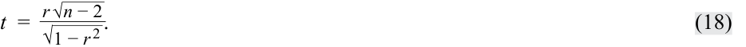
In our example of ROA regressed on CAPEX, the correlation ( r ) is 0.8945. To test whether this correlation is different from zero, we perform a test of hypothesis, shown in Exhibit 22. As you can see, we draw a conclusion similar to that for our test of the slope, but it is phrased in terms of the correlation between ROA and CAPEX: There is a significant correlation between ROA and CAPEX.
Trong ví dụ ROA được hồi quy theo CAPEX của chúng ta, hệ số tương quan ($r$) là $0.8945$. Để kiểm định xem hệ số tương quan này có khác 0 hay không, chúng ta thực hiện kiểm định giả thuyết được trình bày trong Bảng 22. Như bạn có thể thấy, chúng ta rút ra một kết luận tương tự như kết luận cho kiểm định hệ số góc của chúng ta, nhưng được diễn đạt theo mối tương quan giữa ROA và CAPEX: Có mối tương quan có ý nghĩa thống kê giữa ROA và CAPEX.
Exhibit 22: Test of the Correlation between ROA and CAPEX
Bảng 22: Kiểm định Hệ số tương quan giữa ROA và CAPEX
| Step 1 | State the hypotheses. | H_0: ρ = 0 versus_Ha:ρ≠ 0 |
|---|---|---|
| Step 2 | Identify the appropriate test statistic. |
t=r √ _n− 2 √ 1 −r 2 . with 6 − 2 = 4 degrees of freedom. |
| Step 3 | Specify the level of significance. |
α= 5%. |
| Step 4 | State the decision rule. | Critical_t_-values = ±2.776. Reject the null if the calculated_t_-statistic is less than −2.776 or greater than +2.776. |
| Step 5 | Calculate the test statistic. | t=0.8945√ 4 √ _ 1 − 0.8001 = 4.00163. |
| Step 6 | Make a decision. | Reject the null hypothesis of no correlation. There is sufficient evidence to indicate that the correlation between ROA and CAPEX is differ- ent from zero. |
| Bước 1 | Phát biểu các giả thuyết. | $H_0: \rho = 0$ đối lập với $H_a: \rho \neq 0$ |
|---|---|---|
| Bước 2 | Xác định thống kê kiểm định phù hợp. | $t = \frac{r\sqrt{n - 2}}{\sqrt{1 - r^2}}$ với $6 - 2 = 4$ bậc tự do. |
| Bước 3 | Xác định mức ý nghĩa. | $\alpha = 5\%$. |
| Bước 4 | Phát biểu quy tắc quyết định. | Giá trị $t$ tới hạn $= \pm 2.776$. Bác bỏ giả thuyết không nếu thống kê $t$ tính được nhỏ hơn $-2.776$ hoặc lớn hơn $+2.776$. |
| Bước 5 | Tính toán thống kê kiểm định. | $t = \frac{0.8945\sqrt{4}}{\sqrt{1 - 0.8001}} = 4.00163$. |
| Bước 6 | Đưa ra quyết định. | Bác bỏ giả thuyết không về việc không có tương quan. Có đủ bằng chứng cho thấy hệ số tương quan giữa ROA và CAPEX khác 0. |
Another interesting feature of simple linear regression is that the test-statistic used to test the fit of the model (i.e., the F -distributed test statistic) is related to the calculated t -statistic used to test whether the slope coefficient is equal to zero: t2 = F ; therefore, 4.001312 = 16.0104.
Một đặc điểm thú vị khác của hồi quy tuyến tính đơn là thống kê kiểm định được sử dụng để kiểm định mức độ phù hợp của mô hình (tức là thống kê kiểm định có phân phối $F$) có liên hệ với thống kê $t$ tính được dùng để kiểm định xem hệ số góc có bằng 0 hay không: $t^2 = F$; do đó, $4.00131^2 = 16.0104$.
What if instead we want to test whether there is a one-to-one relationship between ROA and CAPEX, implying a slope coefficient of 1.0. The hypotheses become H 0: b 1 = 1 and Ha : b 1 ≠ 1. The calculated t -statistic is as follows:
Điều gì sẽ xảy ra nếu thay vào đó chúng ta muốn kiểm định xem liệu có mối quan hệ một-đối-một (one-to-one relationship) giữa ROA và CAPEX hay không, ngụ ý hệ số góc bằng $1.0$? Các giả thuyết sẽ trở thành $H_0: b_1 = 1$ và $H_a: b_1 \neq 1$. Thống kê $t$ tính được như sau:
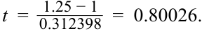
This calculated test statistic falls within the bounds of the critical values, ±2.776, so we fail to reject the null hypothesis: There is not sufficient evidence to indicate that the slope is different from 1.0.
Thống kê kiểm định tính được này nằm trong phạm vi của các giá trị tới hạn, $\pm 2.776$, vì vậy chúng ta không bác bỏ giả thuyết không: Không có đủ bằng chứng để chỉ ra rằng hệ số góc khác $1.0$.
What if instead we want to test whether there is a positive slope or positive correlation, as our intuition suggests? In this case, all the steps are the same as in Exhibit 21 and Exhibit 22 except the critical values because the tests are one sided. For a test of a positive slope or positive correlation, the critical value for a 5 percent level of significance is +2.132. We show the test of hypotheses for a positive slope and a positive correlation in Exhibit 23. Our conclusion is that evidence is sufficient to support both a positive slope and a positive correlation.
Điều gì sẽ xảy ra nếu thay vào đó chúng ta muốn kiểm định xem liệu có hệ số góc dương hay tương quan dương như trực giác của chúng ta gợi ý hay không? Trong trường hợp này, tất cả các bước đều giống như trong Bảng 21 và Bảng 22 ngoại trừ các giá trị tới hạn bởi vì đây là các kiểm định một phía. Đối với kiểm định hệ số góc dương hoặc tương quan dương, giá trị tới hạn tại mức ý nghĩa 5% là $+2.132$. Chúng ta trình bày kiểm định giả thuyết cho hệ số góc dương và tương quan dương trong Bảng 23. Kết luận của chúng ta là có đủ bằng chứng để ủng hộ cả hệ số góc dương và tương quan dương.
Exhibit 23: One-Sided Tests for the Slope and Correlation
Bảng 23: Kiểm định Một phía cho Hệ số góc và Hệ số tương quan
| Test of the Slope | Test of the Correlation | ||
|---|---|---|---|
| Step 1 | State the hypotheses. | H_0:_b_1≤ 0 versus_Ha:_b_1> 0 | H_0:_ρ≤ 0 versus_Ha_:ρ> 0 |
| Step 2 | Identify the appropriate test statistic. |
t= ˆ b_1−_B 1 _s ˆ _b_1 with 6 − 2 = 4 degrees of freedom. |
t=r √ _n− 2 √ 1 −r 2 . with 6 − 2 = 4 degrees of freedom. |
| Step 3 | Specify the level of significance. | α= 5%. | α= 5%. |
| Step 4 | State the decision rule. | Critical_t_-value = 2.132. Reject the null if the calculated |
Critical_t_-value = 2.132. Reject the null if the calculated |
| t-statistic is greater than 2.132. | t-statistic is greater than 2.132. |
| Kiểm định Hệ số góc (Test of the Slope) | Kiểm định Hệ số tương quan (Test of the Correlation) | ||
|---|---|---|---|
| Bước 1 | Phát biểu các giả thuyết. | $H_0: b_1 \le 0$ đối lập với $H_a: b_1 > 0$ | $H_0: \rho \le 0$ đối lập với $H_a: \rho > 0$ |
| Bước 2 | Xác định thống kê kiểm định phù hợp. | $t = \frac{\hat{b}_1 - B_1}{s_{\hat{b}_1}}$ với $6 - 2 = 4$ bậc tự do. | $t = \frac{r\sqrt{n - 2}}{\sqrt{1 - r^2}}$ với $6 - 2 = 4$ bậc tự do. |
| Bước 3 | Xác định mức ý nghĩa. | $\alpha = 5\%$. | $\alpha = 5\%$. |
| Bước 4 | Phát biểu quy tắc quyết định. | Giá trị $t$ tới hạn $= 2.132$. Bác bỏ giả thuyết không nếu thống kê $t$ tính được lớn hơn $2.132$. |
Giá trị $t$ tới hạn $= 2.132$. Bác bỏ giả thuyết không nếu thống kê $t$ tính được lớn hơn $2.132$. |
Step 5 Calculate the test statistic. t = 0.3123981.25 − 0= 4.00131 _t = √0.8945 1 − 0.8001√ _4= 4.00131 Step 6 Make a decision. Reject the null hypothesis. Evidence is Reject the null hypothesis. Evidence is sufficient to indicate that the slope is sufficient to indicate that the correlation greater than zero. is greater than zero.
| Kiểm định Hệ số góc (Test of the Slope) | Kiểm định Hệ số tương quan (Test of the Correlation) | ||
|---|---|---|---|
| Bước 5 | Tính toán thống kê kiểm định. | $t = \frac{1.25 - 0}{0.312398} = 4.00131$ | $t = \frac{0.8945\sqrt{4}}{\sqrt{1 - 0.8001}} = 4.00131$ |
| Bước 6 | Đưa ra quyết định. | Bác bỏ giả thuyết không. Có đủ bằng chứng cho thấy hệ số góc lớn hơn 0. | Bác bỏ giả thuyết không. Có đủ bằng chứng cho thấy hệ số tương quan lớn hơn 0. |
Hypothesis Tests of the Intercept
_Kiểm định Giả thuyết đối với Hệ số chặn (Hypothesis Tests of the Intercept)_
We may want to test whether the population intercept is a specific value. As a reminder on how to interpret the intercept, consider the simple linear regression with a company’s revenue growth rate as the dependent variable ( Y ), and the GDP growth rate of its home country as the independent variable ( X ). The intercept is the company’s revenue growth rate if the GDP growth rate is 0 percent.
Chúng ta có thể muốn kiểm định xem liệu hệ số chặn tổng thể có bằng một giá trị cụ thể nào đó hay không. Để nhắc lại cách diễn giải hệ số chặn, hãy xem xét hồi quy tuyến tính đơn với tốc độ tăng trưởng doanh thu của một công ty là biến phụ thuộc ($Y$), và tốc độ tăng trưởng GDP của quốc gia sở tại là biến độc lập ($X$). Hệ số chặn là tốc độ tăng trưởng doanh thu của công ty nếu tốc độ tăng trưởng GDP là 0%.
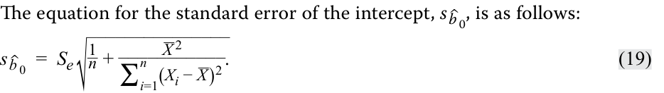
We can test whether the intercept is different from the hypothesized value, B 0, by comparing the estimated intercept ( bˆ 0 ) with the hypothesized intercept and then dividing the difference by the standard error of the intercept:
Phương trình tính sai số chuẩn của hệ số chặn, $s_{\hat{b}_0}$, như sau:
Chúng ta có thể kiểm định xem liệu hệ số chặn có khác với giá trị theo giả thuyết, $B_0$, hay không bằng cách so sánh hệ số chặn ước lượng ($\hat{b}_0$) với hệ số chặn theo giả thuyết và sau đó chia hiệu số này cho sai số chuẩn của hệ số chặn:
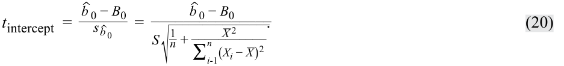
In the ROA regression example, the intercept is 4.875 percent. Suppose we want to test whether the intercept is greater than 3 percent. The one-sided hypothesis test is shown in Exhibit 24. As you can see, we reject the null hypothesis. In other words, evidence is sufficient that if there are no capital expenditures (CAPEX = 0), ROA is greater than 3 percent.
Trong ví dụ hồi quy ROA, hệ số chặn là 4,875%. Giả sử chúng ta muốn kiểm định xem liệu hệ số chặn có lớn hơn 3% hay không. Kiểm định giả thuyết một phía được trình bày trong Bảng 24. Như bạn có thể thấy, chúng ta không bác bỏ giả thuyết không (Lưu ý: văn bản gốc tiếng Anh ở đoạn dẫn ghi nhầm "reject", nhưng trong Bảng 24 Bước 6 ghi chính xác là "Do not reject" vì $t = 0.7905 < 2.132$). Nói cách khác, không có đủ bằng chứng cho thấy nếu không có chi tiêu vốn ($\text{CAPEX} = 0$), ROA sẽ lớn hơn 3%.
Exhibit 24: Test of Hypothesis for Intercept for Regression of ROA on CAPEX
Bảng 24: Kiểm định Giả thuyết cho Hệ số chặn đối với Hồi quy của ROA theo CAPEX
| Step 1 | State the hypotheses. | H_0:_b_0≤ 3% versus_Ha:_b_0> 3% |
|---|---|---|
| Step 2 | Identify the appropriate test statistic. |
t intercept= ˆ b_0−_B 0 _s ˆ _b_0 with 6 − 2 = 4 degrees of freedom. |
| Step 3 | Specify the level of significance. |
α= 5%. |
| Step 4 | State the decision rule. | Critical_t_-value = 2.132. Reject the null if the calculated_t_-statistic is greater than 2.132. |
| Step 5 | Calculate the test statistic. | t intercept= 4.875 − 3.0 ___ 3.4596 ×√ 1 6 + 6.12 _ 122.64 = 1.875 _______ 3.4596 × 0.68562 = 0.7905 |
| Step 6 | Make a decision. | Do not reject the null hypothesis. There is not sufficient evidence to indicate that the intercept is greater than 3%. |
| Bước 1 | Phát biểu các giả thuyết. | $H_0: b_0 \le 3\%$ đối lập với $H_a: b_0 > 3\%$ |
|---|---|---|
| Bước 2 | Xác định thống kê kiểm định phù hợp. | $t_{\text{intercept}} = \frac{\hat{b}_0 - B_0}{s_{\hat{b}_0}}$ với $6 - 2 = 4$ bậc tự do. |
| Bước 3 | Xác định mức ý nghĩa. | $\alpha = 5\%$. |
| Bước 4 | Phát biểu quy tắc quyết định. | Giá trị $t$ tới hạn $= 2.132$. Bác bỏ giả thuyết không nếu thống kê $t$ tính được lớn hơn $2.132$. |
| Bước 5 | Tính toán thống kê kiểm định. | $t_{\text{intercept}} = \frac{4.875 - 3.0}{3.4596 \times \sqrt{\frac{1}{6} + \frac{6.1^2}{122.64}}} = \frac{1.875}{3.4596 \times 0.68562} = 0.7905$ |
| Bước 6 | Đưa ra quyết định. | Không bác bỏ giả thuyết không. Không có đủ bằng chứng để chỉ ra rằng hệ số chặn lớn hơn 3%. |
Hypothesis Tests of Slope When the Independent Variable Is an Indicator Variable
_Kiểm định Giả thuyết của Hệ số góc khi Biến độc lập là một Biến chỉ báo (Hypothesis Tests of Slope When the Independent Variable Is an Indicator Variable)_
Suppose we want to examine whether a company’s quarterly earnings announcements influence its monthly stock returns. In this case, we could use an indicator variable , or dummy variable, that takes on only the values 0 or 1 as the independent variable. Consider the case of a company’s monthly stock returns over a 30-month period. A simple linear regression model for investigating this question would be monthly returns, RET, regressed on the indicator variable, EARN, that takes on a value of 0 if there is no earnings announcement that month and 1 if there is an earnings announcement:
Giả sử chúng ta muốn kiểm tra xem liệu các đợt công bố thu nhập hàng quý của một công ty có ảnh hưởng đến tỷ suất sinh lợi cổ phiếu hàng tháng của công ty đó hay không. Trong trường hợp này, chúng ta có thể sử dụng một biến chỉ báo (indicator variable), hay biến giả (dummy variable), chỉ nhận các giá trị 0 hoặc 1 làm biến độc lập. Hãy xem xét trường hợp tỷ suất sinh lợi cổ phiếu hàng tháng của một công ty trong giai đoạn 30 tháng. Một mô hình hồi quy tuyến tính đơn để nghiên cứu câu hỏi này sẽ là tỷ suất sinh lợi hàng tháng, $\text{RET}$, được hồi quy theo biến chỉ báo, $\text{EARN}$, nhận giá trị bằng 0 nếu không có công bố thu nhập vào tháng đó và bằng 1 nếu có công bố thu nhập:
RET i = b 0 + b 1 EARN i + εi . ~~(21)~~
This regression setup allows us to test whether there are different returns for earnings-announcement months versus non-earnings-announcement months. The observations and regression results are shown graphically in Exhibit 25.
Thiết lập hồi quy này cho phép chúng ta kiểm định xem liệu có sự khác biệt về tỷ suất sinh lợi giữa các tháng có công bố thu nhập so với các tháng không có công bố thu nhập hay không. Các quan sát và kết quả hồi quy được thể hiện bằng đồ thị trong Hình 25.
Exhibit 25: Earnings Announcements, Dummy Variable, and Stock Returns
Hình 25: Công bố Thu nhập, Biến giả và Tỷ suất sinh lợi Cổ phiếu
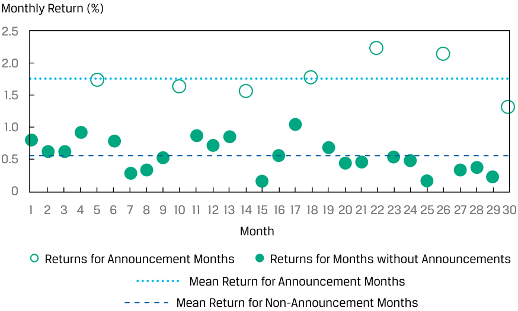
Chú thích hình ảnh: Trục tung: Tỷ suất sinh lợi hàng tháng (%). Trục hoành: Tháng (từ 1 đến 30). Hiển thị Tỷ suất sinh lợi của các tháng có công bố (Returns for Announcement Months) với đường trung bình ở mức cao (~1,77%), và Tỷ suất sinh lợi của các tháng không có công bố (Returns for Months without Announcements) với đường trung bình ở mức thấp (~0,56%).
Clearly there are some months in which the returns are different from other months, and these correspond to months in which there was an earnings announcement. We estimate the simple linear regression model and perform hypothesis testing in the same manner as if the independent variable were a continuous variable. In a simple linear regression, the interpretation of the intercept is the predicted value of the dependent variable if the indicator variable is zero. Moreover, the slope when the indicator variable is 1 is the difference in the means if we grouped the observations by the indicator variable. The results of the regression are given in Panel A of Exhibit 26.
Rõ ràng có một số tháng mà tỷ suất sinh lợi khác biệt so với những tháng khác, và những tháng này tương ứng với các tháng có công bố thu nhập. Chúng ta ước lượng mô hình hồi quy tuyến tính đơn và thực hiện kiểm định giả thuyết theo cùng một cách giống như khi biến độc lập là một biến liên tục (continuous variable). Trong hồi quy tuyến tính đơn, ý nghĩa của hệ số chặn là giá trị dự báo của biến phụ thuộc nếu biến chỉ báo bằng 0. Hơn nữa, hệ số góc khi biến chỉ báo bằng 1 chính là chênh lệch giữa hai giá trị trung bình nếu chúng ta phân nhóm các quan sát theo biến chỉ báo. Kết quả của hồi quy được cho trong Phần A của Bảng 26.
Exhibit 26: Regression and Test of Differences Using an Indicator Variable
Bảng 26: Hồi quy và Kiểm định Sự khác biệt sử dụng Biến chỉ báo
A. Regression Estimation Results
A. Kết quả Ước lượng Hồi quy (Regression Estimation Results)
| fi | Standard Error of fi |
Calculated Test | |
|---|---|---|---|
| Estimated Coefficients | Coefficients | Statistic | |
| Intercept | fi 0.5629 |
fi 0.0560 |
10.0596 |
| EARN | 1.2098 | 0.1158 | 10.4435 |
| Các hệ số ước lượng (Estimated Coefficients) | Sai số chuẩn của các hệ số (Standard Error of Coefficients) | Thống kê kiểm định tính được (Calculated Test Statistic) | |
|---|---|---|---|
| Hệ số chặn (Intercept) | 0.5629 | 0.0560 | 10.0596 |
| EARN | 1.2098 | 0.1158 | 10.4435 |
Regression Estimation Results Degrees of freedom = 28.
Kết quả ước lượng hồi quy: Bậc tự do = 28.
Critical t-values = +2.0484 (5% significance).
Giá trị $t$ tới hạn = $\pm 2.0484$ (mức ý nghĩa 5%).
B. Test of Differences in Means
B. Kiểm định Sự khác biệt giữa Hai Giá trị Trung bình (Test of Differences in Means)
| RET for Earnings- Announcement Months |
RET for Non-Earnings- Announcement Months |
Difference in Means |
|
|---|---|---|---|
| Mean | 1.7727 | 0.5629 | 1.2098 |
| Variance | 0.1052 | 0.0630 | |
| Observations | 7 | 23 | |
| Pooled variance | 0.07202 | ||
| Calculated test | 10.4435 | ||
| statistic |
| RET cho các tháng có công bố thu nhập | RET cho các tháng không có công bố thu nhập | Chênh lệch giữa hai trung bình (Difference in Means) | |
|---|---|---|---|
| Trung bình (Mean) | 1.7727 | 0.5629 | 1.2098 |
| Phương sai (Variance) | 0.1052 | 0.0630 | |
| Số quan sát (Observations) | 7 | 23 | |
| Phương sai gộp (Pooled variance) | 0.07202 | ||
| Thống kê kiểm định tính được (Calculated test statistic) | 10.4435 |
Test of Differences in Means Degrees of freedom = 28. Critical t-values = +2.0484 (5% significance).
Kiểm định sự khác biệt giữa hai giá trị trung bình: Bậc tự do = 28. Giá trị $t$ tới hạn = $\pm 2.0484$ (mức ý nghĩa 5%).
We can see the following from Panel A of Exhibit 26:
Chúng ta có thể thấy những điều sau đây từ Phần A của Bảng 26:
-
The intercept (0.5629) is the mean of the returns for non-earnings-announcement months.
-
The slope coefficient (1.2098) is the difference in means of returns between earnings-announcement and non-earnings-announcement months.
-
We reject the null hypothesis that the slope coefficient on EARN is equal to zero. We also reject the null hypothesis that the intercept is zero. The reason is that in both cases, the calculated test statistic exceeds the critical t -value.
-
Hệ số chặn ($0.5629$) là giá trị trung bình của tỷ suất sinh lợi cho các tháng không có công bố thu nhập.
-
Hệ số góc ($1.2098$) là mức chênh lệch giữa trung bình tỷ suất sinh lợi của các tháng có công bố thu nhập và các tháng không có công bố thu nhập.
-
Chúng ta bác bỏ giả thuyết không cho rằng hệ số góc của $\text{EARN}$ bằng 0. Chúng ta cũng bác bỏ giả thuyết không cho rằng hệ số chặn bằng 0. Lý do là trong cả hai trường hợp, thống kê kiểm định tính được đều vượt quá giá trị $t$ tới hạn.
We could also test whether the mean monthly return is the same for both the non-earnings-announcement months and the earnings-announcement months by testing the following:
Chúng ta cũng có thể kiểm định xem liệu tỷ suất sinh lợi trung bình hàng tháng có như nhau đối với cả các tháng không có công bố thu nhập và các tháng có công bố thu nhập hay không bằng cách kiểm định giả thuyết sau:
H 0 : μRETearnings = μRETNon − earnings and Ha : μRETearnings ≠ μRETNon − earnings
The results of this hypothesis test are gleaned from Panel B of Exhibit 26. As you can see, we reject the null hypothesis that there is no difference in the mean RET for the earnings-announcement and non-earnings-announcements months at the 5 percent level of significance, because the calculated test statistic (10.4435) exceeds the critical value (2.0484).
Kết quả của kiểm định giả thuyết này được rút ra từ Phần B của Bảng 26. Như bạn có thể thấy, chúng ta bác bỏ giả thuyết không cho rằng không có sự khác biệt về giá trị trung bình của $\text{RET}$ giữa các tháng có công bố thu nhập và các tháng không có công bố thu nhập tại mức ý nghĩa 5%, bởi vì thống kê kiểm định tính được ($10.4435$) vượt quá giá trị tới hạn ($2.0484$).
Test of Hypotheses: Level of Significance and p-Values
_Kiểm định Giả thuyết: Mức ý nghĩa và Trị số p (Level of Significance and p-Values)_
The choice of significance level in hypothesis testing is always a matter of judgment. Analysts often choose the 0.05 level of significance, which indicates a 5 percent chance of rejecting the null hypothesis when, in fact, it is true (a Type I error, or false positive). Of course, decreasing the level of significance from 0.05 to 0.01 decreases the probability of a Type I error, but it also increases the probability of a Type II error—failing to reject the null hypothesis when, in fact, it is false (i.e., a false negative).
Việc lựa chọn mức ý nghĩa (significance level) trong kiểm định giả thuyết luôn là vấn đề mang tính phán đoán. Các nhà phân tích thường chọn mức ý nghĩa $0.05$, biểu thị 5% khả năng bác bỏ giả thuyết không khi trên thực tế nó đúng (sai lầm Loại I – Type I error, hay dương tính giả – false positive). Tất nhiên, việc giảm mức ý nghĩa từ $0.05$ xuống $0.01$ làm giảm xác suất mắc sai lầm Loại I, nhưng nó cũng làm tăng xác suất mắc sai lầm Loại II (Type II error)—không bác bỏ giả thuyết không khi trên thực tế nó sai (tức là âm tính giả – false negative).
The p -value is the smallest level of significance at which the null hypothesis can be rejected. The smaller the p -value, the smaller the chance of making a Type I error (i.e., rejecting a true null hypothesis), so the greater the likelihood the regression model is valid. For example, if the p -value is 0.005, we reject the null hypothesis that the true parameter is equal to zero at the 0.5 percent significance level (99.5 percent
Trị số $p$ ($p$-value) là mức ý nghĩa nhỏ nhất mà tại đó giả thuyết không có thể bị bác bỏ. Trị số $p$ càng nhỏ thì cơ hội mắc sai lầm Loại I (tức là bác bỏ một giả thuyết không đúng) càng nhỏ, do đó khả năng mô hình hồi quy hợp lệ càng lớn. Ví dụ, nếu trị số $p$ là $0.005$, chúng ta bác bỏ giả thuyết không cho rằng tham số thực sự bằng 0 tại mức ý nghĩa 0,5% (độ tin cậy 99,5%).
confidence). In most software packages, the p -values provided for regression coefficients are for a test of null hypothesis that the true parameter is equal to zero against the alternative that the parameter is not equal to zero.
Trong hầu hết các gói phần mềm, trị số $p$ được cung cấp cho các hệ số hồi quy là dành cho kiểm định giả thuyết không rằng tham số thực sự bằng 0 đối lập với giả thuyết đối rằng tham số khác 0.
In our ROA regression example, the calculated t -statistic for the test of whether the slope coefficient is zero is 4.00131. The p -value corresponding to this test statistic is 0.016, which means that, assuming the null hypothesis is true, there is a 1.6% chance of observing a test statistic as extreme as the one observed, or more extreme. Comparing this p -value with the level of significance of 5 percent (and critical values of ±2.776) leads us to easily reject the null hypothesis of H 0: b 1 = 0.
Trong ví dụ hồi quy ROA của chúng ta, thống kê $t$ tính được cho kiểm định xem liệu hệ số góc có bằng 0 hay không là $4.00131$. Trị số $p$ tương ứng với thống kê kiểm định này là $0.016$, có nghĩa là, giả sử giả thuyết không là đúng, có 1,6% khả năng quan sát được một thống kê kiểm định khắc nghiệt như giá trị đã quan sát, hoặc khắc nghiệt hơn. So sánh trị số $p$ này với mức ý nghĩa 5% (và các giá trị tới hạn $\pm 2.776$) giúp chúng ta dễ dàng bác bỏ giả thuyết không $H_0: b_1 = 0$.
How do we determine the p -values? Because this is the area in the distribution outside the calculated test statistic, we need to resort to software tools. For the p -value corresponding to the t = 4.00131 from the ROA regression example, we could use the following:
Làm thế nào chúng ta xác định được các trị số $p$? Bởi vì đây là diện tích trong phân phối nằm bên ngoài thống kê kiểm định tính được, chúng ta cần nhờ đến các công cụ phần mềm. Đối với trị số $p$ tương ứng với $t = 4.00131$ từ ví dụ hồi quy ROA, chúng ta có thể sử dụng các hàm sau:
-
Excel (1-T.DIST(4.00131,4,TRUE))*2
-
R (1-pt(4.00131,4))*2
-
Python from scipy.stats import t and (1 - t.cdf(4.00131,4))*2
-
Excel:
(1-T.DIST(4.00131,4,TRUE))*2 -
R:
(1-pt(4.00131,4))*2 -
Python:
from scipy.stats import tvà(1 - t.cdf(4.00131,4))*2
QUESTION SET
BỘ CÂU HỎI (QUESTION SET)
The following applies to questions 1–3:
Thông tin sau đây áp dụng cho các câu hỏi 1–3:
Julie Moon is an energy analyst examining electricity, oil, and natural gas consumption in different regions over different seasons. She ran a simple regression explaining the variation in energy consumption as a function of temperature. The total variation of the dependent variable was 140.58, and the explained variation was 60.16. She had 60 monthly observations.
Julie Moon là một nhà phân tích năng lượng đang kiểm tra mức tiêu thụ điện, dầu và khí tự nhiên ở các khu vực khác nhau qua các mùa khác nhau. Cô đã chạy một hồi quy đơn giải thích sự biến thiên trong mức tiêu thụ năng lượng như một hàm số của nhiệt độ. Tổng biến thiên (total variation) của biến phụ thuộc là $140.58$, và phần biến thiên được giải thích (explained variation) là $60.16$. Cô có 60 quan sát hàng tháng.
- Calculate the coefficient of determination.
- Tính hệ số xác định (coefficient of determination).
Solution:
Lời giải:
The coefficient of determination is 0.4279:
Hệ số xác định là $0.4279$:
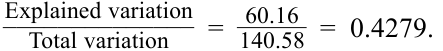
- Calculate the F -statistic to test the fit of the model.
- Tính thống kê $F$ ($F$-statistic) để kiểm định mức độ phù hợp của mô hình.
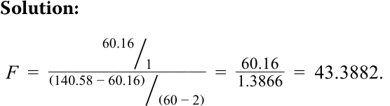
- Calculate the sample standard deviation of monthly energy consumption.
Lời giải:
Solution:
- Tính độ lệch chuẩn mẫu (sample standard deviation) của mức tiêu thụ năng lượng hàng tháng.
Lời giải:
The sample variance of the dependent variable uses the total variation of the dependent variable and divides it by the number of observations less one:
Phương sai mẫu của biến phụ thuộc sử dụng tổng biến thiên của biến phụ thuộc và chia cho số lượng quan sát trừ đi một:
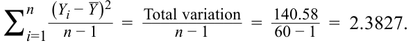
The sample standard deviation of the dependent variable is the square root of the variance, or √_ 2.3827 = 1.544 .
Độ lệch chuẩn mẫu của biến phụ thuộc là căn bậc hai của phương sai, hay $\sqrt{2.3827} = 1.544$.
The following applies to questions 4–6:
Thông tin sau đây áp dụng cho các câu hỏi 4–6:
An analyst is interested in interpreting the results of and performing tests of hypotheses for the market model estimation that regresses the daily return on ABC stock on the daily return on the fictitious Europe–Asia–Africa (EAA) Equity Index, his proxy for the stock market. He has generated the regression results presented in Exhibit 27.
Một nhà phân tích quan tâm đến việc diễn giải kết quả và thực hiện các kiểm định giả thuyết cho ước lượng mô hình thị trường (market model) hồi quy tỷ suất sinh lợi hàng ngày của cổ phiếu ABC theo tỷ suất sinh lợi hàng ngày của Chỉ số Cổ phiếu Âu–Á–Phi (EAA) giả định, đại diện (proxy) cho thị trường chứng khoán của anh ấy. Anh ấy đã tạo ra các kết quả hồi quy được trình bày trong Bảng 27.
Exhibit 27: Hypothesis Testing of Simple Linear Regression Results Selected Results of Estimation of Market Model for ABC Stock
Bảng 27: Kiểm định Giả thuyết Kết quả Hồi quy Tuyến tính Đơn – Kết quả Chọn lọc của Ước lượng Mô hình Thị trường cho Cổ phiếu ABC
| Standard error of the estimate (se) | 1.26 |
|---|---|
| Standard deviation of ABC stock returns | 0.80 |
| Standard deviation of EAA Equity Index returns | 0.70 |
| Number of observations | 1,200 |
| Coefficients | |
| Intercept | 0.010 |
| Slope of EAA Equity Index returns | 0.982 |
| Thống kê / Hệ số | Giá trị |
|---|---|
| Sai số chuẩn của ước lượng ($s_e$) | 1.26 |
| Độ lệch chuẩn của tỷ suất sinh lợi cổ phiếu ABC | 0.80 |
| Độ lệch chuẩn của tỷ suất sinh lợi Chỉ số Cổ phiếu EAA | 0.70 |
| Số lượng quan sát | 1,200 |
| Các hệ số (Coefficients) | |
| Hệ số chặn (Intercept) | 0.010 |
| Hệ số góc của tỷ suất sinh lợi Chỉ số Cổ phiếu EAA | 0.982 |
- Nếu các giá trị $t$ tới hạn là $\pm 1.96$ (tại mức ý nghĩa 5%), hệ số góc có khác 0 hay không?
- If the critical t -values are ±1.96 (at the 5 percent significance level), is the slope coefficient different from zero? Solution:
Lời giải:
First, we calculate the variation of the independent variable using the standard deviation of the independent variable:
Đầu tiên, chúng ta tính sự biến thiên của biến độc lập bằng cách sử dụng độ lệch chuẩn của biến độc lập:
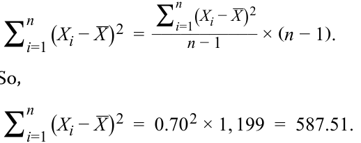
So,
Vì vậy,
Next, the standard error of the estimated slope coefficient is
Tiếp theo, sai số chuẩn của hệ số góc ước lượng là:
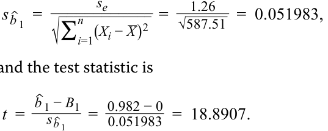
and the test statistic is
và thống kê kiểm định là:
The calculated test statistic is outside the bounds of ±1.96, so we reject the null hypothesis of a slope coefficient equal to zero.
Thống kê kiểm định tính được nằm ngoài phạm vi $\pm 1.96$, vì vậy chúng ta bác bỏ giả thuyết không cho rằng hệ số góc bằng 0.
- If the critical t -values are ±1.96 (at the 5 percent significance level), is the slope coefficient different from 1.0?
- Nếu các giá trị $t$ tới hạn là $\pm 1.96$ (tại mức ý nghĩa 5%), hệ số góc có khác $1.0$ hay không?
Solution:
Lời giải:
The calculated test statistic for the test of whether the slope coefficient is equal to 1.0 is
Thống kê kiểm định tính được cho kiểm định xem liệu hệ số góc có bằng $1.0$ hay không là:
~~~~ _t =0.982 − 1 0.051983= − 0.3463.
The calculated test statistic is within the bounds of ±1.96, so we fail to reject the null hypothesis of a slope coefficient equal to 1.0, which is evidence that the true population slope may be 1.0.
Thống kê kiểm định tính được nằm trong phạm vi $\pm 1.96$, vì vậy chúng ta không bác bỏ giả thuyết không cho rằng hệ số góc bằng $1.0$, đây là bằng chứng cho thấy hệ số góc tổng thể thực sự có thể bằng $1.0$.
- An economist collected the monthly returns for KDL’s portfolio and a diversified stock index. The data collected are shown in Exhibit 28:
- Một nhà kinh tế học đã thu thập tỷ suất sinh lợi hàng tháng cho danh mục đầu tư của KDL và một chỉ số cổ phiếu đa dạng hóa. Dữ liệu thu thập được trình bày trong Bảng 28:
Exhibit 28: Monthly Returns for KDL
Bảng 28: Tỷ suất sinh lợi Hàng tháng của KDL
| Month | Portfolio Return (%) | Index Return (%) |
|---|---|---|
| 1 | 1.11 | −0.59 |
| 2 | 72.10 | 64.90 |
| 3 | 5.12 | 4.81 |
| 4 | 1.01 | 1.68 |
| 5 | −1.72 | −4.97 |
| 6 | 4.06 | −2.06 |
| Tháng (Month) | Tỷ suất sinh lợi Danh mục đầu tư (%) | Tỷ suất sinh lợi Chỉ số (%) |
|---|---|---|
| 1 | 1.11 | −0.59 |
| 2 | 72.10 | 64.90 |
| 3 | 5.12 | 4.81 |
| 4 | 1.01 | 1.68 |
| 5 | −1.72 | −4.97 |
| 6 | 4.06 | −2.06 |
The economist calculated the correlation between the two returns and found it to be 0.996. The regression results with the portfolio return as the dependent variable and the index return as the independent variable are given in Exhibit 29:
Nhà kinh tế học đã tính hệ số tương quan giữa hai tỷ suất sinh lợi và thấy nó bằng $0.996$. Kết quả hồi quy với tỷ suất sinh lợi danh mục đầu tư là biến phụ thuộc và tỷ suất sinh lợi chỉ số là biến độc lập được cho trong Bảng 29:
Exhibit 29: Regression Results
Bảng 29: Kết quả Hồi quy (Regression Results)
| Regression Statistics | |
|---|---|
| R2 | 0.9921 |
| Standard error | 2.8619 |
| Observations | 6 |
| Thống kê Hồi quy (Regression Statistics) | |
|---|---|
| $R^2$ | 0.9921 |
| Sai số chuẩn (Standard error) | 2.8619 |
| Số quan sát (Observations) | 6 |
| Source | df | Sum of Squares |
Mean Square |
F | p-Value |
|---|---|---|---|---|---|
| Regression | 1 | 4,101.6205 | 4,101.6205 | 500.7921 | 0.0000 |
| Residual | 4 | 32.7611 | 8.1903 | ||
| Total | 5 | 4,134.3815 |
| Nguồn (Source) | Bậc tự do (df) | Tổng bình phương (Sum of Squares) | Trung bình bình phương (Mean Square) | $F$ | Trị số $p$ ($p$-Value) |
|---|---|---|---|---|---|
| Hồi quy (Regression) | 1 | 4,101.6205 | 4,101.6205 | 500.7921 | 0.0000 |
| Phần dư (Residual) | 4 | 32.7611 | 8.1903 | ||
| Tổng (Total) | 5 | 4,134.3815 |
| Coefficients | Standard Error |
t-Statistic | p-Value | |
|---|---|---|---|---|
| Intercept | 2.2521 | 1.2739 | 1.7679 | 0.1518 |
| Index | 1.0690 | 0.0478 | 22.3784 | 0.0000 |
| return (%) |
| Các hệ số (Coefficients) | Sai số chuẩn (Standard Error) | Thống kê $t$ ($t$-Statistic) | Trị số $p$ ($p$-Value) | |
|---|---|---|---|---|
| Hệ số chặn (Intercept) | 2.2521 | 1.2739 | 1.7679 | 0.1518 |
| Tỷ suất sinh lợi chỉ số (Index return, %) | 1.0690 | 0.0478 | 22.3784 | 0.0000 |
When reviewing the results, Andrea Fusilier suspected that they were unreliable. She found that the returns for Month 2 should have been 7.21 percent
Khi xem xét lại kết quả, Andrea Fusilier nghi ngờ rằng chúng không đáng tin cậy. Cô phát hiện ra rằng tỷ suất sinh lợi của Tháng 2 lẽ ra phải là 7,21%
and 6.49 percent, instead of the large values shown in the first table. Correcting these values resulted in a revised correlation of 0.824 and the revised regression results in Exhibit 30:
và 6,49%, thay vì các giá trị lớn được hiển thị trong bảng đầu tiên. Việc sửa lại các giá trị này đã mang lại hệ số tương quan điều chỉnh là $0.824$ và kết quả hồi quy điều chỉnh trong Bảng 30:
Exhibit 30: Revised Regression Results
Bảng 30: Kết quả Hồi quy Đã điều chỉnh (Revised Regression Results)
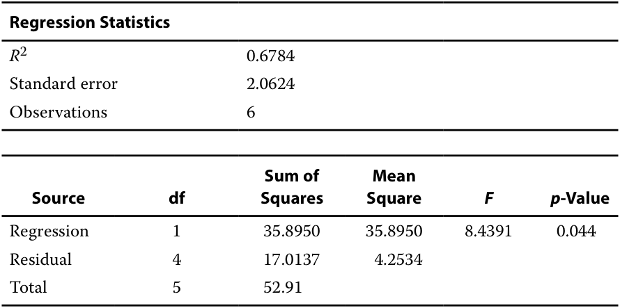
| Coefficients | Standard Error |
t-Statistic | p-Value | |
|---|---|---|---|---|
| Intercept | 2.2421 | 0.8635 | 2.5966 | 0.060 |
| Slope | 0.6217 | 0.2143 | 2.9050 | 0.044 |
| Thống kê Hồi quy (Regression Statistics) | |
|---|---|
| $R^2$ | 0.6784 |
| Sai số chuẩn (Standard error) | 2.0624 |
| Số quan sát (Observations) | 6 |
| Nguồn (Source) | Bậc tự do (df) | Tổng bình phương (Sum of Squares) | Trung bình bình phương (Mean Square) | $F$ | Trị số $p$ ($p$-Value) |
|---|---|---|---|---|---|
| Hồi quy (Regression) | 1 | 35.8950 | 35.8950 | 8.4391 | 0.044 |
| Phần dư (Residual) | 4 | 17.0137 | 4.2534 | ||
| Tổng (Total) | 5 | 52.91 |
Explain how the bad data affected the results.
| Các hệ số (Coefficients) | Sai số chuẩn (Standard Error) | Thống kê $t$ ($t$-Statistic) | Trị số $p$ ($p$-Value) | |
|---|---|---|---|---|
| Hệ số chặn (Intercept) | 2.2421 | 0.8635 | 2.5966 | 0.060 |
| Hệ số góc (Slope) | 0.6217 | 0.2143 | 2.9050 | 0.044 |
Solution:
Hãy giải thích dữ liệu sai đã ảnh hưởng đến kết quả như thế nào.
The Month 2 data point is an outlier, lying far away from the other data values. Because this outlier was caused by a data entry error, correcting the outlier improves the validity and reliability of the regression. In this case, revised R2 is lower (from 0.9921 to 0.6784). The outliers created the illusion of a better fit from the higher R2 ; the outliers altered the estimate of the slope. The standard error of the estimate is lower when the data error is corrected (from 2.8619 to 2.0624), as a result of the lower mean square error. At a 0.05 level of significance, both models fit well. The difference in the fit is illustrated in Exhibit 31.
Lời giải:
Điểm dữ liệu Tháng 2 là một giá trị ngoại lai (outlier), nằm cách rất xa so với các giá trị dữ liệu khác. Bởi vì giá trị ngoại lai này là do lỗi nhập dữ liệu, việc sửa chữa giá trị ngoại lai giúp cải thiện tính hợp lệ và độ tin cậy của hồi quy. Trong trường hợp này, $R^2$ sau điều chỉnh thấp hơn (từ $0.9921$ xuống $0.6784$). Các giá trị ngoại lai đã tạo ra ảo giác về mức độ phù hợp tốt hơn từ mức $R^2$ cao hơn; các giá trị ngoại lai cũng đã làm thay đổi ước lượng của hệ số góc. Sai số chuẩn của ước lượng thấp hơn khi lỗi dữ liệu được sửa chữa (từ $2.8619$ xuống $2.0624$), do trung bình bình phương sai số (MSE) thấp hơn. Tại mức ý nghĩa $0.05$, cả hai mô hình đều phù hợp tốt. Sự khác biệt về mức độ phù hợp được minh họa trong Hình 31.